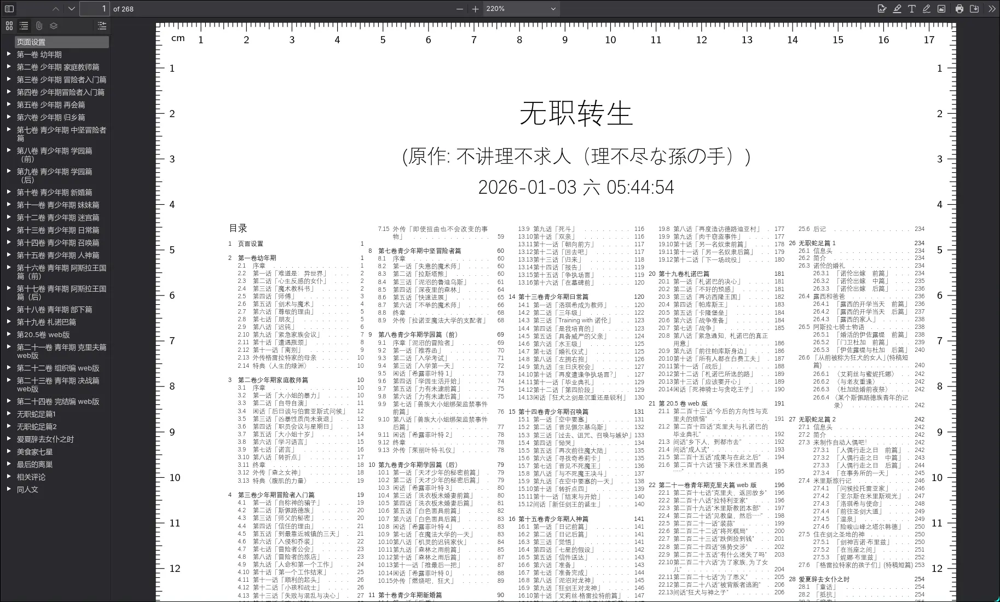
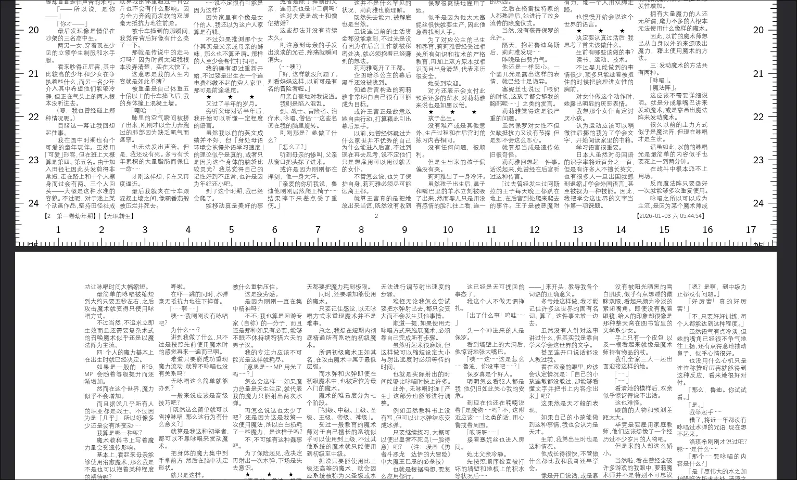

基于latex生成缩印用pdf
一篇水玩意，别看了
1. 食用方法
- 确保拥有 等线Light 字体（Windows自带）
- 克隆整个仓库（包括lib子仓库）
在同级目录下运行./merge_to_tex.py这个程序，例如说：
./merge_to_tex.py -i 无职.json
上面还用到了个./无职.json，是写那个脚本使用的配置文件。如果要印自己的东西照着程序输出的标志json修改即可。
2. 组成
- 程序
orgreader2.py：自制基于python的org文件导出器，勉强能用merge_to_tex.py：脚本本体，负责配置读取，文档结果合并等
latex模板
自制，带有强效缩印效果，嫌字小就在默认配置里改大点。
3. 效果

Figure 1: 上述命令输出的效果

Figure 2: 关键交界处及页脚展示